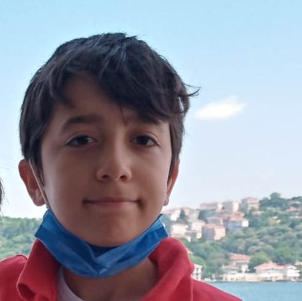
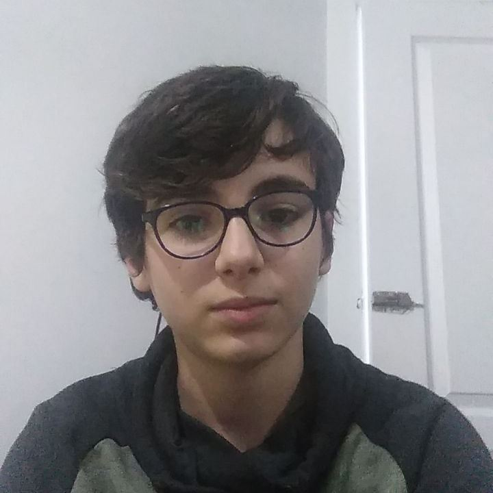
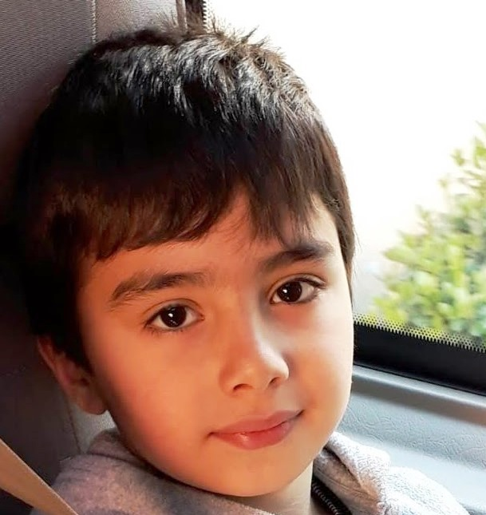

On The Way
Bilsem Bilişim Takımı On The Way Üyelerini Tanıttığımız Bu siteye hoşgeldiniz
Takım arkadaşlarımızı bu sitede size tanıtmaya çalıştık.

Ali Ekrem Kaylı
Beyoğlu Anadolu İmam Hatip Ortaokulnda 7. sınıfta okuyor.
Hobileri programlama yapmak, kitap okumak , resim çizmek ve oyun oynamak.
Öyg 2 öğrencisi ve On The Way takımının kaptanı.
Hayalindeki meslek yazılım mühndisliği.

Taha Güzel
On The Way takımı üyesidir. OYG2 öğrencisidir.
Bilsemde bilişim alanında ders görmektedir.
Beyoğlu Anadolu İmam hatip Ortaokulunda 7. sınıf öğrencisidir.
Hobileri futbol oynamak, kitap okumak,bilgisayar oyunu oynamakdır.
Bilgisayar mühendisi olmak istemektedir.

Muhammet Ali Nas
On The Way takım üyesiyim.
Bilsem’de ÖYG-2 öğrencisiyim, Coğrafya ve Bilişim dersi alıyorum.
Beyoğlu Anadolu İmam Hatip Lisesi İmam Hatip Ortaokulunda 7. Sınıfa gidiyorum.
Mühendis olmak istiyorum.
Bisiklet sürmeyi ve top oynamayı severim.
Koyu Yenerbahçeli’yim.